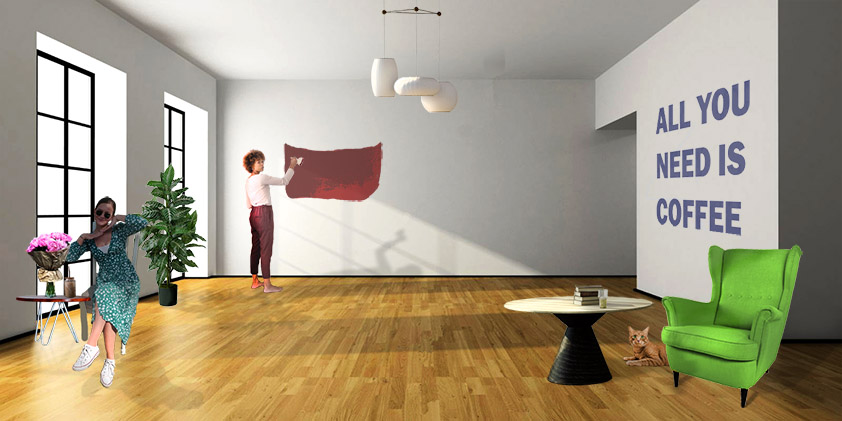

Na ovoj stranici priložene su sve vjžbe iz kolegija Digitalni multimediji 1.
Vježbe su podijeljene na one iz vektorske grafike, piksel grafike te izrada videa i web stranica.
VEKTORSKA GRAFIKA
Vektorska grafika je način prikazivanja slike pomoću geometrijskih oblika kao što su točke, linje, krivulje i poligoni, a temelji se na matematičkim jednadžbama. Programi koje smo koristili su Adobe Illustrator i Inkscape
PRVA VJEŽBA - IZRADA FONTA
U Prvoj vježbi bilo je potrebno dizajnirati vlastiti font za slova svoga imena i prezimena te hrvatske slovne znakove. Programi koje smo koristili u ovoj vježbi su Fontgrapher i FontForge.
DRUGA VJEŽBA - CRTANJE BAZIEROVIH KRIVULJA U KOORDINATNOM SUSTAVU
Bezierova krivulja je parametarska krivulja definirana sa 4 točke i predstavlja temelj današnje vektorske grafike.
U ovoj vježbi bilo je potrebno kreirati proizvoljan broj vlastitih krivulja čije su točke poravnate prema mreži vlastitog koordinatnog sustava, definirati im boju i debljinu
obruba te između njih napraviti interpolaciju to jest blend. Koristeći vlastiti font s prošle vježbe preko krivulja ispisati tekst i od njega napraviti masku. Pri izardi ove vježbe
treba voditi računa o veličini teksta i njegovom položaju u odnosu na krivulje kako bi se maska što bolje vidjela.
TREĆA VJEŽBA - BOJA I TRANSFORMACIJE
Zadatak je bio izvesti vlastiti primjer sa multipliciranim objektima nacrtanima sa alatom Pen.
Objekte smo crtali ili kao konture odabrane slike predloška (po vlastitom izboru) ili slobodno nacrtanima bez predloška. Tehnikama kopiranja tipkom Alt (Duplicate) više puta
smo kopirali oblike te aplicirai drugačijim bojama kreiranim u novoj Color grupi (Swatch) sa barem pet novih boja.
ČETVRTA VJEŽBA - GRADIJENTI, TRANSPARENCIJA
U vježbi se obrađuje tema izrade složenih objekata koji se sastoje od više staza metodama spajanja (Unite/Compound path)
ili oduzimanja oblika (Difference/Subtract).
PRVI PROJEKTNI ZADATAK
U prvom dijelu zadatka bilo je potrebno kreirati vlastiti font sa slovnim znakovima koji tvore riječ Voće. Zatim kreirati jednostranični dokument u Adobe Illustratoru
ili Inkscape-u veličine A3. U dokumentu pomoću alata za crtanje Bezierovih krivulja iscrtati sliku prema zadanom predlošku. U dokumentu su se treabli koristiti elementi
clipping mask, koristiti transformacije i multipliciranje objekata, linearni i radijalni gradijent te mesh, definirati swatch boje te koristiti transparenciju.
Moj predložak prikazivao je fotografiju s čašama i voćem.
PIKSEL GRAFIKA
Za izradu vježbi iz piksel grafike koristili smo programe Adobe Photoshop ili Gimp.
PETA VJEŽBA - RETUŠIRANJE
U ovoj vježbi smo koristili tehnike digitalnog retuširanja fotografija za postizanje realističnog efekta. Koristili smo Lasso tool, zamućivanje,
kloniranje, kopiranjem selekcije u layere te lokalne i globalne korekcije boja (Burn/Dodge brush, Levels, Brightness/Contrast)
ŠESTA VJEŽBA - KOLORIRANJE
U vježbi prolazimo kroz tehnike neinvazivnog koloriranja slike koje se može primijeniti na crno-bijele slike
ili slike u boji kojima želimo promijeniti nijansu određenih područja. Selekcijom željenih dijelova slike stvaramo maske kojima skrivamo ili
otkrivamo efekte kolorizacije. Boja se aplicira na zaseban sloj (layer) kako ne bismo uništili originalne tonove i kako bismo mogli lakše napraviti
promjene u kasnijim fazama obrade slike. Selekcije se izvode i popravljaju ručno (ne automatskim alatima) kako bi što preciznije izdvojili željenu boju
iz pozadine jer o tome najviše ovisi kvaliteta slike.
SEDMA VJEŽBA - FOTOMONTAŽA
Glavni cilj fotomontaže je kombiniranje više fotografija izrezivanjem dijelova različitih slika i spajanjem u jednu cjelinu.
Pritom je najvažnije kvalitetno selektirati dijelove koje želimo izrezati kako bi se što bolje uklopili u finalnu sliku. U ovoj vježbi prolazimo kroz različite
tehnike selektiranja jednostavnih i složenih oblika. Jednostavne tehnike selekcije uključuju alate kojima selektiramo poligone i oštre rubove objekata, a složenije
tehnike selekcije podrazumijevaju selekciju putem kanala slike ili crtanje maski brush i eraser alatima u modu quick mask. Vježba se bavi i izradom i uklapanjem sjena
objekata koje smo uvezli izrezivanjem i korekcijom boja kako bi se pojačao dojam realističnosti.
PROJEKTNI ZADATAK 2
Kreirati sliku u Adobe Photoshopu ili GIMPu kao kompoziciju više fotografija koristeći tehnike
retuširanja, fotomontaže i koloriranja. U zadatku je trebalo koristiti i alate za transformacije, maske, lokalne i globalne korekcije boja alatima
korištenima u vježbama, sjene, transparencije slojeva i tekst.

IZRADA VIDEA I WEB STRANICA
Programi koje smo koristili za video editiranje bili su Adobe Premiere, Shotcut, Davinci Resolve, a programi za dizajniranje WEB stranica,
Adobe Dreamweaver, Notepad++, Atom ili Sublime Text.
VJEŽBA OSAM - CINEMAGRAF
Ova vježba se bavi osnovama obrade video materijala i uvođenjem multimedije u video projekt. Rezultat vježbe će biti kinemagraf čija je karakteristika spajanje statične
i pokretne slike. Kinemagraf ili eng. cinemagraph je video isječak čija se sekvenca ponavlja u beskonačnost, najčešće u GIF formatu, a u kompoziciji spaja pokretnu i
statičnu grafiku (sliku i video). Dok je većina grafike statična, samo mali dio je animiran (pokretan). U izradi vježbe, za obradu statične slike te krajnji izvoz,
koristit ćemo Photoshop ili GIMP, a obradu video isječka radit ćemo u Adobe Premiereu ili u alternativnim programima Davinci Resolve ili Shotcut koji imaju slično sučelje
kao i Premiere.
VJEŽBA DEVET - VIDEO OBRADA
U ovoj vježbi je bilo potrebno koristiti dva video isječka te ih izrezati. Zatim im dodati efekte koa što su scale, rotation, efekti boja
i tako dalje. Također je trebalo umetnuti jedan statični i jedan pomični tekst te dodati zvuk.
VJEŽBA DESET I JEDANAEST
U ovoj vježbi prelazimo na stvaranje web sadržaja, kao nosioca multimedije na webu. Multimedijski sadržaj koji želimo prenijeti preko
weba se odnosi na tekst, sliku, video i zvuk. Web stranice se kreiraju putem označnog jezika HTML, Hypertext Markup Language, kojim definiramo tip sadržaja koji želimo
prikazati. HTML dokumente kodiramo u različitim tekst editorima te spremamo dokumente kao .html datoteke. Stiliziranje HTML sadržaja se definira jezikom CSS,
Cascading Style Sheets, kojim određujemo veličine, pozicije, boje i druge stilske karakteristike sadržaja.